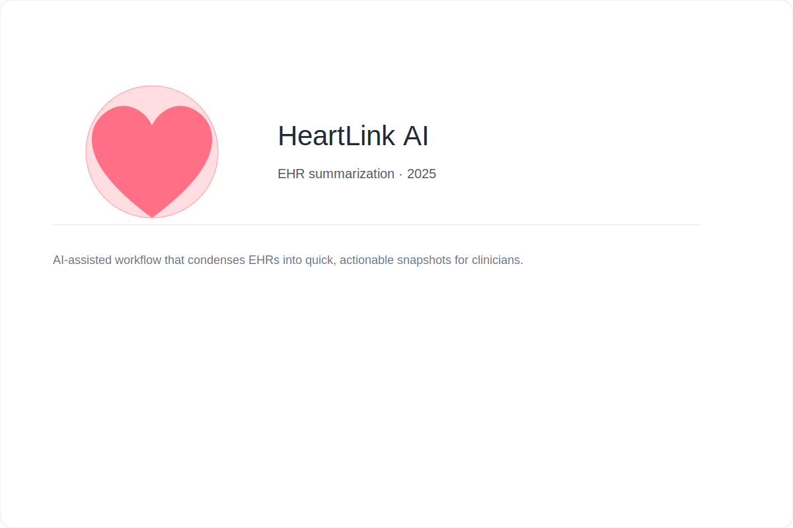

Designed an AI-assisted workflow that condenses electronic health records into quick, actionable snapshots for clinicians. This project focused on clinician efficiency, information hierarchy, and meaningful summarization of long notes.
My role
UX Research, Interaction Design, Prototyping, and stakeholder interviews.
Outcome
Prototype tested with clinicians showed a 30% reduction in time-to-insight in lab scenarios (mock data).